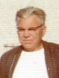

RAYMOND LUSSIERfiche familiale
*******************************************************************************
Raymond Lussier
De Toronto, Ont. en août 1942.
Épouse: Léa Régnier
*******************************************************************************
Enfant 1 Roland LussierMariage le 7 déc 1938 à Ste-Thérèse-d'Avila d'Amos
Conjointe: Lorraine CharbonneauPère: Ovide CharbonneauMère: Marie Payette
-------------------------------------------------------------------------------
Enfant 2 Aimée LussierMariage le 17 mai 1941 à St-Sauveur de Val-D'Or
Conjoint: Marcel LabrecquePère: David LabrecqueMère: Alma Dugal
-------------------------------------------------------------------------------
| 
|
Enfant 3 Jacques Lussierdécède à l'âge de 65 ans. Nais. le 18 mai 1915 à Ste-Rose-du-Lac, MB Dit "Jack"Décès le 30 mai 1980 à Moose-Jaw, SK Sépulture au cimetière Resthaven Mémorial Garden, Moose-Jaw, SK Mariage le 22 aoû 1942 à St-Sauveur de Val-D'Or Conjointe: Aline Henrin. 8 fév 1920 d. 25 avril 1999 (sa famille) |
*******************************************************************************